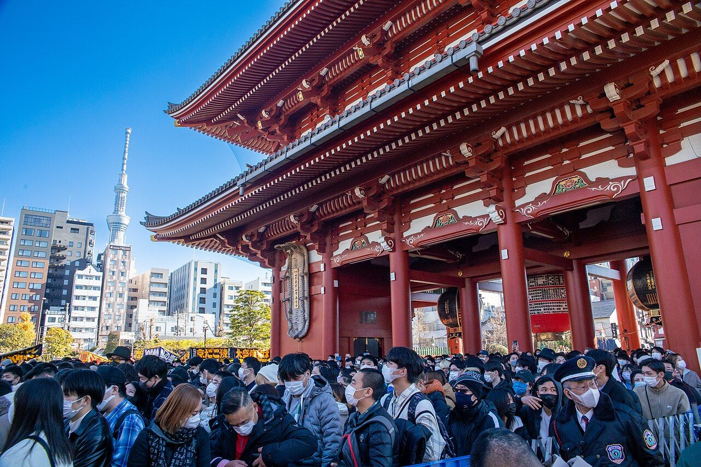
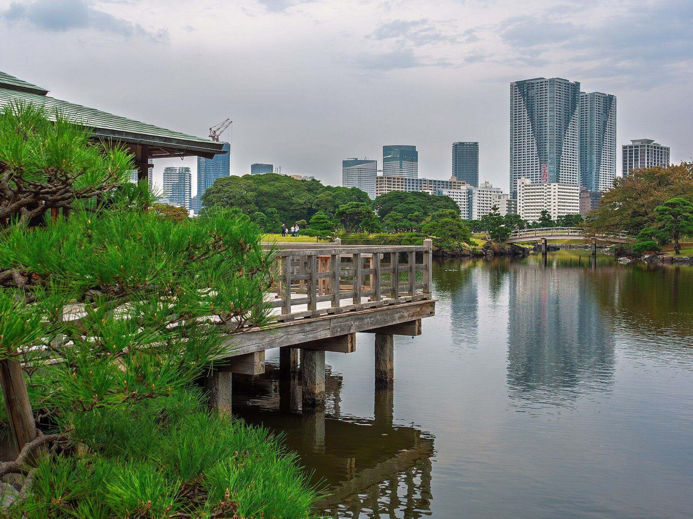
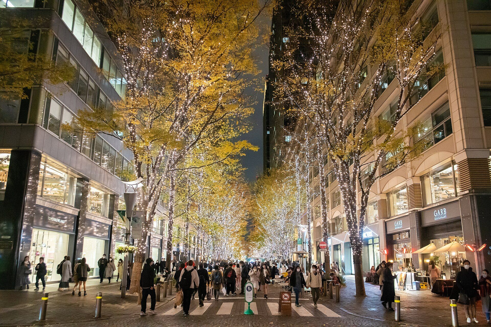

第一版
街区与餐厅
轻奢、现代、古典、生活气息的 10 个街区，69 家餐厅按新年营业筛选，附五日路线。

第二版
人少的东京
36 处小众轻奢景点：庭园、名建筑、私人美术馆、寄席与能乐，按日期看哪里开着。

第三版
奢华的东京
星级餐厅、品牌餐厅、酒店酒吧与水疗、歌舞伎栈敷席，五日行程逐项算好花费。

第四版
好逛的东京
百货初卖、买手店和美妆，草莓下午茶和漂亮晚餐，1 月还亮着的灯饰，附退税新规。
第五版
游戏机的东京
秋叶原与中野的复古店和中古收藏店、官方店、主题咖啡和街机厅，附买机须知。